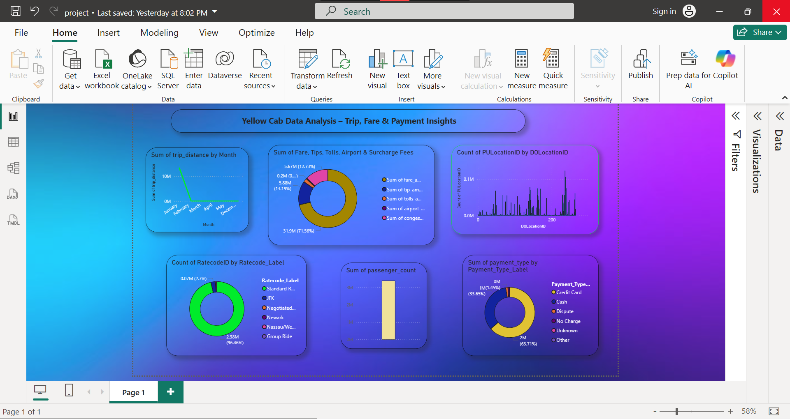

🚖 NYC Yellow Taxi Data Analysis (Jan 2022)
This project cleans and analyzes NYC Yellow Taxi trip data using Python and presents business insights through Power BI.
📷 Dashboard Preview

🧹 Data Cleaning Summary (Python)
- RatecodeID: Replaced 99 and nulls with 1 (Standard Rate)
- store_and_fwd_flag: Filled nulls with 'N'
- airport_fee: Replaced -1.25 with 1.25, nulls with 0.0
- congestion_surcharge: Replaced -2.5 with 2.5, nulls with 2.3
- passenger_count: Filled missing values with 1
📊 Key Insights from Power BI
- Top fare types: Standard Rate dominates
- Credit card is the most common payment method
- Monthly trip distances are clearly visualized
- Pickup/Dropoff locations distribution
- Passenger counts and total amount breakdown
📁 Files
Note: Open project2.pbix in Power BI Desktop to view the full dashboard.
🔗 View on GitHub
📌 Created by Mohammad Ashfaq Ur Rahman